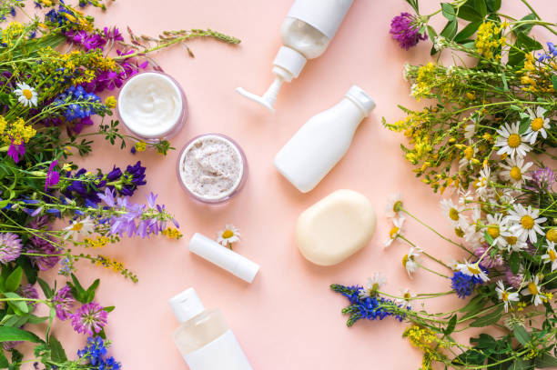

Organic Products:
Keeping your skin looking healthy and radiant is important,because healthy skin is one of the biggest indicators that tell us whether we are healthy on the inside too. In fact, the skin is the largest organ of our entire body, so we really should trat it with care.
5 Great Reason we think it is important to do so:
1. Using natural and organic skincare products can reduce skin irritation unlike non-organic and non-natural products.
2. Natural and organic skincare products have stood the test of time.
3. If you wouldn't eat it don't put it on your skin!
4. Buying better quality, organic and natural products actually means you end up saving a lot in the long run!
5. Buying naturally and sustainably sourced products can be much kinder to the environment.
About Us:

We are Nature's Lush and here to provide you the best organic products which will make your skin clear, glowing and youthful skin. Every female whether she is in her 20's, 30's, or 40's... dreams of a beautiful, clear, glowing skin and spends lots of money on products which are not at all beneficial but also can be harmful to your face. Everyone faces skin issues like acne, darkspots, dull skin, blackheads, whiteheads... and much more so don't worry these are very normal skin problems which usually every female faces but if you avoid this problems in early stages it can be severe too. So we are here with huge Natural Collection to cure all your skin problems. It's said "Nature is the best medicine" and our Indian culture has a tradition of using natural beauty products so why not bring that tradition back with us. With a blend of natural ingredients and touch of nature's lush providing you the best organic products which will not only cure you skin problems but will also prevent from skin probems. Just do one thing switch to Nature's Lush...
Follow Us:
On instagram: Nature's_Lush Official
On facebook: Nature's_Lush30 Official